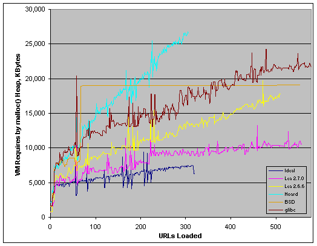
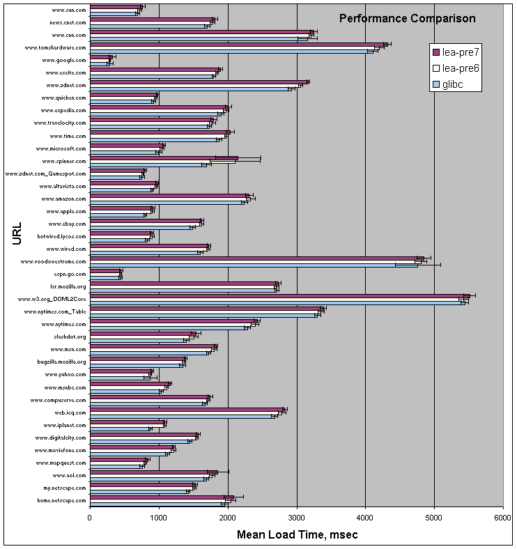

You are currently viewing a snapshot of www.mozilla.org taken on April 21, 2008. Most of this content is highly out of date (some pages haven't been updated since the project began in 1998) and exists for historical purposes only. If there are any pages on this archive site that you think should be added back to www.mozilla.org, please file a bug.
Below is a graph that compares the gross virtual memory utilization of
some common memory allocators. The data was collected from the
/proc filesystem while a
full1
gtkEmbed build from 2001-01-04 ran through approximately
550 “top” URLs. (Due to crash bugs in gtkEmbed, some of
the runs have been truncated.)

The graph is showing the total amount of virtual memory
required for the malloc() heap. This number was
calculated by subtracting the process’s stack, static data, and code
size (approximately 18MB) from the process’s total VM size.
The Ideal line was computed by analyzing a log of allocations performed during one of the runs, and maintaining a running counter of how much heap data was “live” at any one time. As such, it charts the amount of VM that a “perfect” allocator (one without block overhead or fragmentation) would use.
TBD
The below graph shows the mean load times for a 2001-01-17 optimized
gtkEmbed build using the stock glibc
allocator, the lea-2.7.0pre6 allocator, and the
lea-2.7.0pre7 allocator. Data was collected by loading
the URLs in sequence ten times; i.e., www.sun.com, then
news.cnet.com, ..., then home.netscape.com, then
www.sun.com, and so forth. The content for each site was
downloaded from the Internet and stored on a web server accessable via
local-area network to minimize network interference. On average,
gtkEmbed with the lea-2.7.0pre6 allocator
was about 5% slower than with the glibc allocator, and
about 8% slower with the lea-2.7.0pre7 allocator.
2

TBD
TBD
1
By “full”, I mean that gtkEmbed was run from the “stock”
mozilla directory. It therefore tends to load more componentry that a
“minimal” embed build.
2 The raw data is avaialable here as a tab-delimited text file.